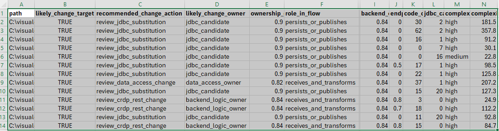

A source-code assessment accelerator that finds sensitive field references, identifies likely change owners, and highlights where a Thales JDBC driver approach may reduce or eliminate application code changes.
Customers generally know they need to protect sensitive data. The harder question is where the real migration effort lives. Multi-tier applications often reference sensitive fields in front-end code, but the real implementation work usually sits in back-end services, API layers, JDBC paths, SQL statements, Kafka flows, and other integration logic.
This scanner gives customers a fast, explainable way to move from architecture assumptions to code-based evidence.
Where do sensitive fields appear, which files are likely front-end only, which files look like true back-end owners, and where JDBC may lower impact.
React, Angular, or Node.js clients; Spring Boot, .NET, Python, Go, or Node.js services; and JDBC, SQL, Kafka, or vector-search integrations.
Takes guesswork out of migration discussions by showing where testing, delivery effort, and implementation ownership are likely to concentrate.
The scanner extracts identifier-like tokens, normalizes naming styles, and compares them to built-in and customer-defined aliases.
accntNbraccnt_nbraccnt_nbrCUSTOM_ACCOUNT_NUMBER
This works well across camelCase, PascalCase, snake_case, and customer-specific abbreviations such as
acctNbr, accntNbr, householdNbr, and hhId.
The scanner now goes beyond field counting. It looks for route ownership, API layers, SQL and JDBC access, and supporting DTO/model files.
frontend_reference_onlybackend_logic_ownerdata_access_ownerjdbc_candidatesupporting_modelIn this context, a DTO is a Data Transfer Object: a simple class or record used to carry data between layers, such as a request body, response payload, or model shape passed between controller, service, and repository code. It usually describes structure, not business logic.
Line-level findings, matched attributes, category summaries, progress indicators, optional JSON output, and Excel-friendly CSV export of likely change targets.
Front end, back end, data access, likely change owner, likely change target, recommended change action, role in flow, and supporting model patterns.
Shows the difference between files that mention sensitive data and files that are more likely to require CRDP or JDBC migration work.

Total files analyzed in scope, including source and related code artifacts.
Files containing at least one built-in or customer-defined sensitive field reference.
Line-level findings across the codebase. Useful for sizing review effort, not just implementation effort.
Estimated areas where SQL and JDBC evidence suggest a lower-impact migration path.
Estimated service and orchestration areas where CRDP REST changes may require implementation work.
Likely change owner, role in flow, related files, endpoint correlation, and system-of-record indicators.
The likely-change-targets CSV now includes jdbc_tables and sensitive_columns, and an optional SQL handoff file can generate describe and max-length checks for JDBC-candidate tables.
The complexity index is a planning aid. It is not a replacement for architecture review, but it helps teams start with evidence instead of guesswork.
likely_change_target highlights the files most likely to need review.recommended_change_action gives the fastest search and triage field.likely_change_owner shows whether the file looks like back-end logic, data access, JDBC candidate, or supporting model.ownership_confidence helps teams focus first on the strongest candidates.jdbc_tables and sensitive_columns make DBA handoff easier.These fields are available in JSON and CSV outputs, and JDBC-candidate tables can also be exported to a DBA planning SQL file for further analysis.
backend_owner_confidenceendpoint_correlation_scorecode_change_candidate_countjdbc_candidate_countcomplexity_ratingcomplexity_scoreTeams can use the generated SQL to check current max stored lengths and compare them against column widths when planning for additional tokenization metadata.
Instead of relying on diagrams alone, customers can review concrete evidence showing where sensitive fields appear, which files are likely front-end references only, which files are likely API or business-logic owners, which service files correlate to likely data-access owners, which files should be reviewed first for CRDP REST changes versus JDBC substitution, and where a Thales JDBC driver may reduce code changes.
The result is faster scoping, clearer project planning, better DBA preparation, better developer alignment, and more practical discussions about CRDP REST versus JDBC-based protection.